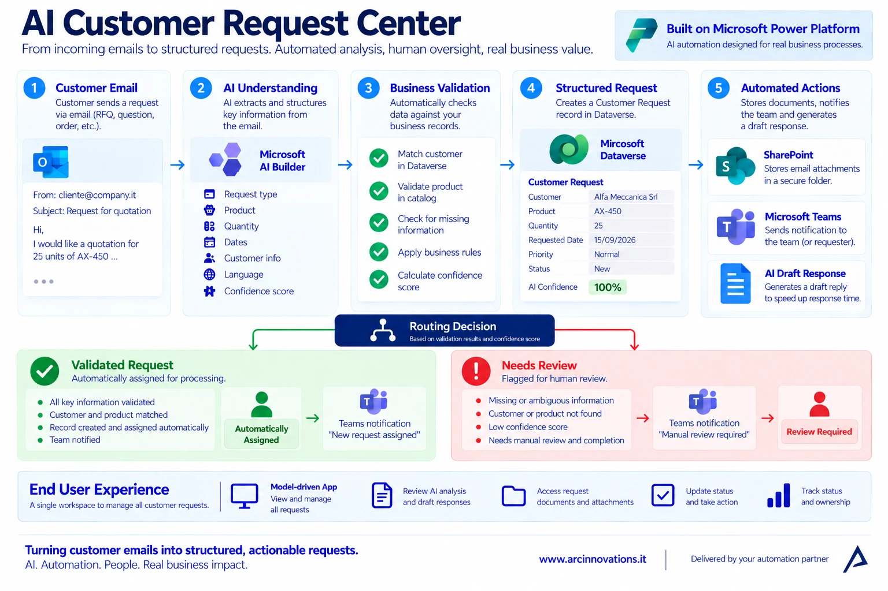
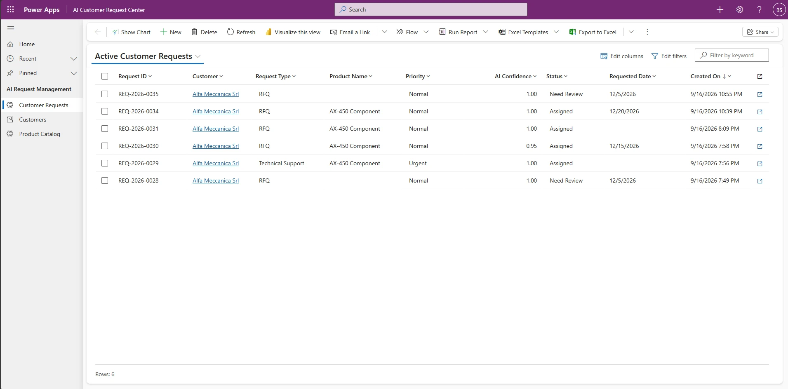
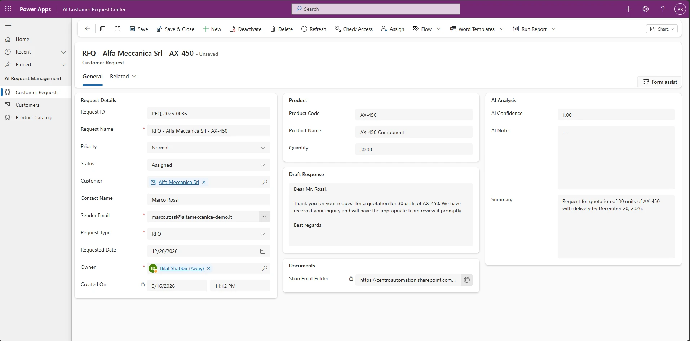
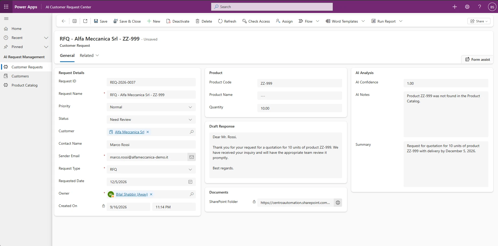
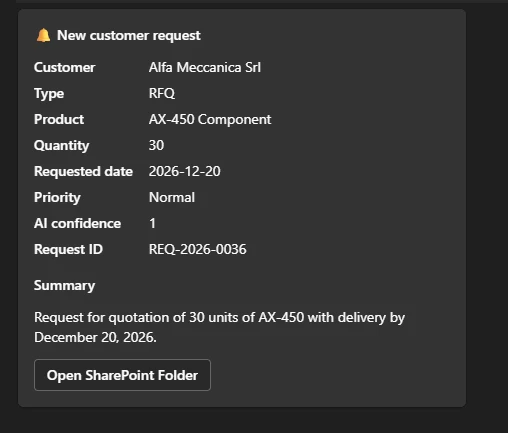
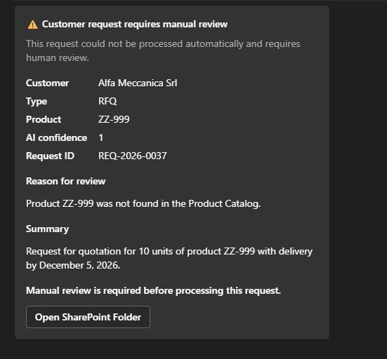
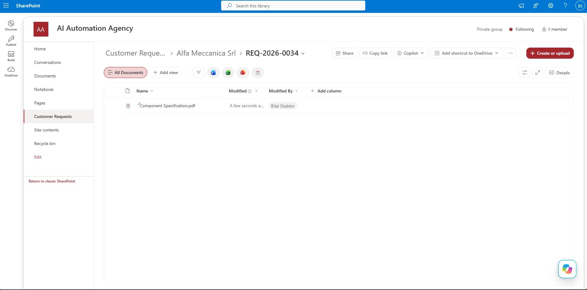

Understand the request
Extract request type, customer, product, quantity, requested date, priority, language, and confidence. Missing information stays empty rather than being invented.
AI & AUTOMATION / MICROSOFT POWER PLATFORM
PROTOTYPE CASE STUDYAI Customer Request Center turns email-driven work into structured, traceable requests—with business validation and human review built in.
Built by Arc Innovations as a prototype. Screenshots show the demonstration environment; no measured client savings are claimed.
THE CHALLENGE
RFQs, orders, product questions, and support requests arrive as email text and attachments. Employees then re-enter information, look up customers and products, organize documents, and decide who should act.
THE SOLUTION
Extract request type, customer, product, quantity, requested date, priority, language, and confidence. Missing information stays empty rather than being invented.
Match customers in Dataverse and validate product codes against the Product Catalog. Combine deterministic business rules with AI confidence.
Create a request record, organize attachments, prepare a reply draft, and notify the team in Teams. Keep uncertainty visible.
HOW IT WORKS

A custom AI Builder prompt produces structured fields from the incoming Outlook message.
Power Automate matches the customer and checks product codes against trusted master data. Confidence is one input, not permission to bypass rules.
Dataverse stores status, priority, owner, AI summary, and review notes.
SharePoint folders are created when attachments exist. A second prompt prepares a reply in the customer’s language without confirming price, availability, or delivery.
Validated requests are assigned. Unknown, ambiguous, or invalid requests become Needs Review, with the reason recorded and a relevant Teams notification.
THE OPERATING WORKSPACE
The model-driven Power Apps workspace gives employees one queue for assigned requests and review-required exceptions. They can search, assign, review, and complete business records without opening Power Automate.

PATH 01 / VALIDATED REQUEST
In the demonstration, an RFQ from Alfa Meccanica Srl refers to product AX-450. The customer is matched, the product is validated, and the request is assigned to the account owner.

PATH 02 / HUMAN REVIEW
The second RFQ contains product ZZ-999, which is absent from the Product Catalog. AI understands the email, but the deterministic product check prevents automatic processing. The record is marked Needs Review.
“Product ZZ-999 was not found in the Product Catalog.” The reason is stored on the request, so the reviewer has immediate context.

COLLABORATION



BUSINESS VALUE
| Before | Prototype capability | Pilot measure |
|---|---|---|
| Manual email interpretation and re-entry | Structured extraction and request creation | Handling time and corrections per request |
| Repeated customer and product lookups | Validation against trusted business data | Match accuracy and invalid-reference detection |
| Attachments spread across inboxes | Request-linked SharePoint folders | Document retrieval time and completeness |
| Unclear exceptions | Needs Review status with a stored reason | Review completion time and missed exceptions |
| Replies composed from scratch | Customer-language reply drafts | Draft acceptance rate and editing time |
These are suggested pilot measures, not measured results from a client deployment.
THE STACK
Workflow orchestration
Business data and requests
Email understanding and drafting
Operational workspace
Request documents
Notifications
Email intake
Deployment configuration
WHERE IT FITS
A production rollout needs agreed routing rules, permissions, licensing, monitoring, retry behavior, and acceptance tests. Those requirements are scoped for each engagement.
YOUR NEXT STEP
In a free consultation, we can review one workflow and discuss which parts are suitable for automation, where human review belongs, and how to evaluate a pilot.
← AI & Automation services · All case studies